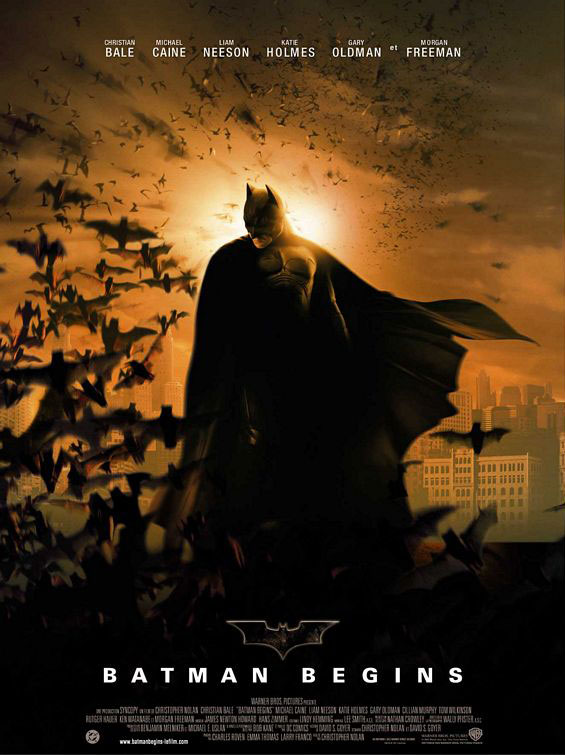

Бэтмен: Начало Batman Begins

«Я тебя убивать не стану, но и спасать не буду…» В 2005 году жанр кино снятое по мотивам комикса"" вышел на новый уровень. Точнее его туда вывели - Кристофер Нолан и Кристиан Бэйл своим фильмом
"Бэтмен: Начало". У данного проекта очень интересная судьба, и то, что фильм в итоге вышел - это просто настоящее чудо. Приступая к сьемкам истории о молодом Бэтмене, Нолан отлично понимал, что
ему нужно кардинально изменить облик всего что как - то связано с миром и вселенной этого супергероя. В результате за сценарную основу были взяты графические произведения Фрэнка Миллера, и его "Бэтмен: год первый",
где показаны самые темные времена жизни Брюса Уэйна и его альтер эго. Наибольшее внимание режиссера приковано, разумеется, к самому Бэтмену. Это, пожалуй, первый фильм об этом герое, где на первом
плане именно "Человек -
Летучая Мышь". Режиссер досканально изучает его происхождение, его психологию, его, в конце концов, моральные и жизненные приоритеты. Кристиан Бэйл идеально подошел на эту роль. Одно из лучших кастинговых
решений последних лет. Бэтмен всегда был, на мой взгляд, самым интересным из героев комиксов, темный, непонятый обществом, мрачный. Однако образ созданный Бэйлом просто поразил, теперь он стал куда более реальным
и правдоподобным. Кардинальному изменению подверглись все остальные персонажи комиксов, сыгранные потрясающими актерами. Подумать только на второстепенных ролях в картине снялся почти весь цвет мирового кино, от Моргана Фримана до Гари Олдмана и Майкла Кейна.
Именно они придают фильму необходимый шарм и обояние.
Кристофер Нолан не побоялся поэксперементировать, весь его фильм имеет отчетливый привкус нуара. Особую роль в этом сыграла атмосфера города Готэм, который гениальный британский режиссер превратил
из готического мирка Тима Бертона и детского утренника Джоэла Шумахера в абсолютно невиданное ранее вместилище греха и порока. Фильм несмотря на комиксовую принадлежность имеет очень много умных и глубоких мыслей,
не в последнюю очередь, благодаря литературной основе Миллера, но и сценаристы постарались на славу. Впервые приходится констатировать тот факт, что мозги не отключались на просмотре, а наоборот жадно впитывали и анализировали
полученную информацию. Под конец становится очевидным, что авторы пытались нам сказать на протяжении более чем двух часов. Одной из главных тем картины является борьба с терроризмом. Зло на этот раз представлено как, своего рода,
третейский судья, который решает жить, прогнившему на всех уровнях городу, или умереть, не оставляя право последнего выбора его жителям. Бэтмен пройдя не легкий тернистый путь, первым осознает смысл этого выбора.
Концом фильма Нолана просто заигрывает со зрителями. Сцена, где комиссар Гордон вручает Бэтмену карту с изображением Джокера просто потрясла меня. Стоя аплодирую Кристоферу Нолану за такой замечательный
открытый конец.
"Бэтмен: Начало" - это настоящее событие в мире комикс экранизаций. Первый комикс, который необходимо посмотреть любому человеку, если он даже на дух не переносит истории снятые по рисованным картинкам. Абсолютно
пересмотренный и переосмысленный мир Бэтмена с совершенно другой авторской позиции, чем это было у Тима Бертона. Причем не только физический мир, где он существует или сосуществует со своими сторонниками
или противниками, но и что еще более важно и интересно - его внутренний мир. В этом фильме есть все: и личностный кризис, и глубокий подтекст, и сложная запутанная сюжетная линия, которая заставляет вас не отрываться от экрана,
и, наконец, захватывающий экшен.